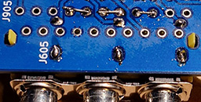
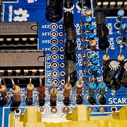
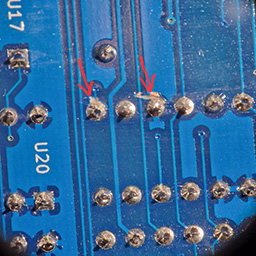
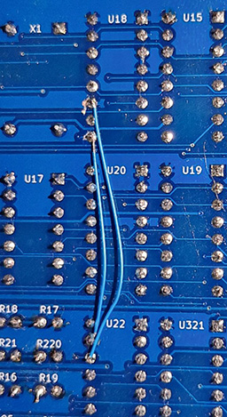

Site map) Home > Getting Started > Building > Durango·X > Step-by-step
Building the Durango computer, step-by-step
General guidelines
Please check the general guidelines for building these PCBs, but do not attempt soldering until you have read this document IN FULL.
Critical points
Besides the aforementioned guidelines, you must pay attention to some items on the Durango·X PCB:
- IOx and Expansion (sidecar) connectors must be placed ABSOLUTELY FLUSH to the board, otherwise fitting peripherals may become difficult or right impossible!
- If you plan to use the suggested keyboard/gamepads interface board, do NOT solder
D6andD4yet (POWERandERRORLEDs) as they must be set at the proper height in order to be visible over the keyboard PCB.
Make sure to read the hack and fixes section according to your PCB's revision.
Video output options
Tip
Except for the overlapping output connectors, all components can be soldered no matter the chosen video option (although some values may differ)
- The SCART connector (
J905in v2+,J105in v1) and the 3x RCA for Sync-on-green (v1,J005) or Component video (v2+,J605) do overlap, thus only one can be physically mounted. - The 3x RCA for the second video output (
J706in v2+,J6in v1) may be desired for the Component video option, as audio is always available there. That second video output won't be enabled unless the associate components for the second output (C709,R731on v2+;C9,R31on v1) are fitted.
Hacks and fixes
FIX colours when using the Component video adapter board (v1)
Make sure the proper Luminance DAC values are used in the Durango·X PCB. In short:
| Designator | Silkscreen values | Luminance values |
|---|---|---|
R107 |
5K6 | 8K2 |
R109 |
22K | 18K |
R110 |
39K | 33K |
Tip
v2+, even if using the SCART option, bear the new Luminance values in the silkscreen.
FIX unstable or missing image on the Component video option (v2-v2.1)
- Make sure resistors
R911thruR914are fitted (even if they were intended for SCART only) - Ground the SCART red, green and blue outputs, by putting jumper wires between pins 7-9, 11-13 and 15-17 of (non-installed)
J905-- or connect those 6 pins together, as preferred.

Tip
v2.2+ renames those resistors as R111 thru R114, making them compulsory whenever the colour mode is used, no matter the interface. Solder bridges are provided on the PCB's front side for convenience.
FIX colours on the Component video option (v2-v2.1)
Original silkscreen shows wrong values, resulting on weird colours. Use these values instead:
| Designator | Silkscreen values | Corrected values |
|---|---|---|
R643 |
4K7 | 6K2* |
R644 |
12K | 22K |
R645 |
22K | 47K |
R646 |
56K | 82K |
R653 |
4K7 | 6K2* |
R654 |
15K | 33K |
R655 |
27K | 62K** |
R656 |
33K | 39K |
*) Theoretically, this is the most accurate value from E24 series, but 5K6 from the standard E12 series seems to work just fine.
**) Theoretically, this is the most accurate value from E24 series, but 56K from the standard E12 series seems to work just fine.

Tip
This is fixed in v2.2+ (using 5K6 and 56K values)
Image is shifted to the left in v2-v2.1
In the original design (v1), image was not perfectly centered on screen by design, but slightly towards the right. For v2.0 and v2.1 there is a design error which notably shifts the display to the left. It is fully fuctional and the whole screen area is visible, but not as aesthetically pleasing, especially now with perfectly square pixels...
The fix for this is a relatively simple mod, all done within the back of the board:
- Cut the connections to pins 9 and 11 of
U18(coming from the left hand side, towards the video connectors) - Use a bodge wire to connect
U18pin 9 toU22pin 15 - Use a bodge wire to connect
U18pin 11 toU22pin 14 (or, alternatively, to the nearby via next to pin 9 ofU18, if possible)


Tip
This is completely fixed in v2.2+
Somewhat unstable horizontal sync, especially in TURBO mode (v2+)
Use a 74AC4040 for U15 instead of the HC version. Unfortunately, these are somewhat hard to come by, especially in DIP package as required by this board.
Tip
v2.2 already states 74AC4040 on the silkscreen.